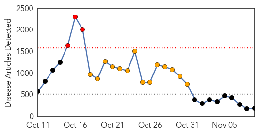

30 Day Trends
Web: 3 alerts, 14 warnings
Twitter: 1 alerts, 4 warnings
Top Articles:
- 1.000
- UPDATE 1-Ebola death toll rises to 4,950
- 1.000
- MUSC: Pilot with 'flu-like' symptoms is 'no risk' for Ebola
- 1.000
- Two Viral Things Worse Than Ebola: Fear & Politics
- 1.000
- Ebola: Belfast woman tested for virus may have come into contact with airline passengers in London
- 1.000
- Northern Ireland Patient Being Tested for Ebola, PHA Confirms
- 1.000
- Dallas can expect more diseases, all requiring agile responses
- 1.000
- Ebola given to over 250 mice and monkeys at Porton Down weapons research centre
- 1.000
- Relatives of Ebola Patients Criticize Sierra Leone Hospitals
- 1.000
- Relatives of Ebola Patients Criticize Sierra Leone Hospitals
- 0.999
- ‘No need to panic over Ebola’
- 0.999
- Kenya : Japan’s first suspected Ebola case ruled out
- 0.999
- Op-ed: If Ebola comes, Utah's health system is prepared
- 0.999
- Ebola: UN Chief Hails Progress in Fight Against Virus
- 0.999
- Ebola outbreak prompts new safety protocols for healthcare workers
- 0.999
- Perry takes proper tone on Ebola
- 0.999
- Mali's First Ebola Case In Current Outbreak Is 2-Year-Old Girl
- 0.998
- Ebola: UN chief hails progress in fight against virus, urges intensified response
- 0.998
- Ebola: UN chief hails progress in fight against virus, urges intensified response
- 0.998
- U.S. officials unveil plans to test Ebola drugs
- 0.998
- The Kathmandu Post :: Liberia returnees declared Ebola-free
- 0.998
- Symposium offers West African perspective on Ebola
- 0.998
- Philippines donates $1 million to help UN efforts against Ebola
- 0.998
- Ebola: UN chief hails progress in fight against virus, urges intensified response
- 0.998
- 1980s Hot Zone’ scientists think US can handle Ebola
- 0.998
- 1980s ‘Hot Zone’ scientists think US can handle Ebola
- 0.998
- Ebola: Sierra Leone hit by lack of units
- 0.997
- Texas reaches Ebola monitoring endpoint
- 0.997
- Ebola outbreak slowing in Liberia: WHO
- 0.997
- Gulf Daily News Local News WHO specialists in Bahrain
- 0.997
- Remote Sierra Leone region pleads for help in Ebola fight
- 0.997
- Dallas Ends Ebola Monitoring Period
- 0.996
- PokerStars Fights Ebola Virus
- 0.996
- Irish Ebola aid response ‘hampered by red tape’
- 0.996
- No HSE high alert despite North ebola scare
- 0.996
- North Texas is officially Ebola-free
- 0.995
- WHO team to inspect Ebola prevention in Bahrain
- 0.995
- Sustained work required on Ebola front
- 0.995
- Quarantines for Ebola Health Workers Don't Stop the Disease
- 0.994
- Health monitoring ends for Ohio Ebola contacts - Tallmadge Express
- 0.994
- Missionary quarantined in Charlotte connected to three other Ebo
- 0.994
- Missionary quarantined in Charlotte connected to three other Ebo
- 0.994
- Kansas Ebola plan calls for voluntary isolation
- 0.994
- Africa Sets Up Ebola Crisis Fund of $28.5M to Deploy 1,000 Health Workers
- 0.994
- Guinea Is Discovering More Ebola Cases
- 0.993
- Africa Sets Up $28.5m Crisis Fund
- 0.992
- President Koroma’s Envoy Makes Strong Case for Sierra Leone at Saudi Conference for Controlling Ebola
- 0.991
- Ebola Outbreak! The good, the bad, the ugly
- 0.990
- Ebola volunteers wrestle with quarantine mandates
- 0.990
- Korea to send Ebola aid team to Sierra Leone
- 0.990
- Ebola volunteers wrestle with quarantine mandates
Showing top 50 articles...
Top Tweets:
- 0.855
- RT: People can’t spread Ebola if they aren’t sick. Only way to get Ebola is direct contact w/ body fluids of a person w/ symptom…
- 0.607
- Ebola Virus Disease: SitRep 5 November 2014 ebolaresponse http://t.co/GsVidWEuq0
- 0.561
- Ebola outbreak impedes health care access for other diseases http://t.co/n5TivhT9A3 malaria
- 0.506
- Relatives of Ebola Patients Criticize Sierra Leone Hospitals. http://t.co/AlZfOI9Ky8
Web/News Articles
Tweets

Article Locations

Article Confidences